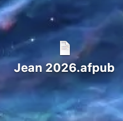

Bereits die ersten beiden „No Kings“-Proteste – der Name bezieht sich auf die von der Opposition als zunehmend autoritär wahrgenommene Form des Regierens – brachten in vielen Städten und in fast allen Bundesstaaten Hunderttausende

Laut der Nachrichtenwebsite Axios sind USA-weit mehr als 3.000 Demos geplant. Getragen und organisiert werden die Proteste von Gewerkschaften, Menschenrechts- und Bürgerrechtsorganisationen und progressiven politische Nachrichtenwebsite Axios sind USA-weit mehr als 3.000 Demos geplant. Getragen und organisiert werden die Proteste von Gewerkschaften, Menschenrechts- und Bürgerrechtsorganisationen und progressiven politisc